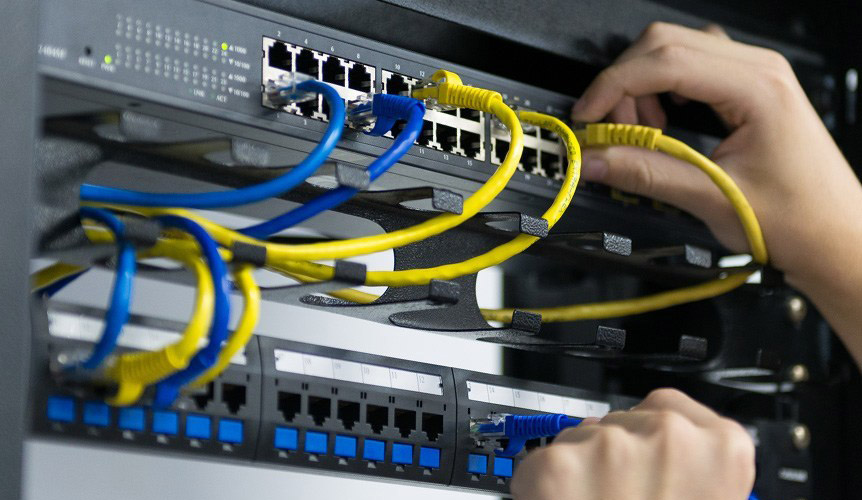
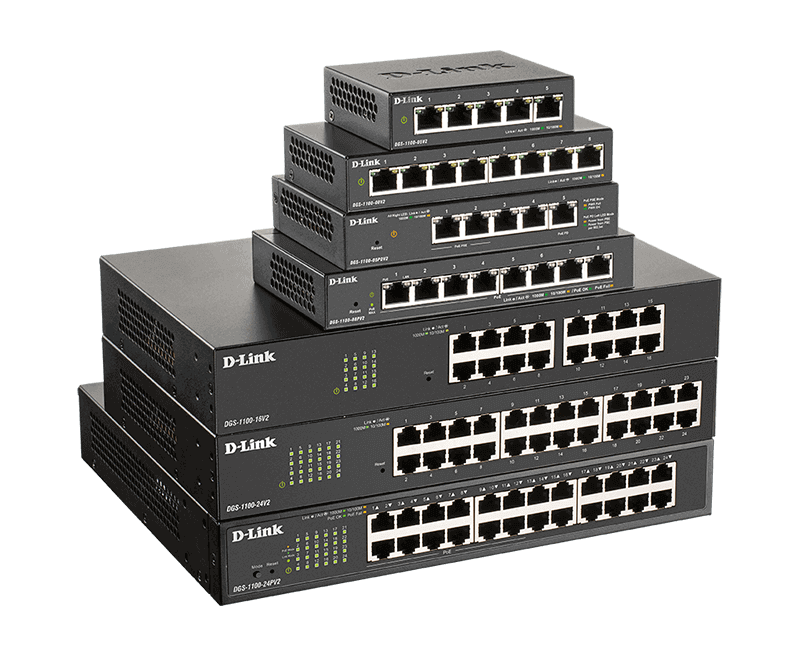

Bem-vindo à Potter Digital , o seu destino para soluções de informática inovadoras!
Estamos animados em recebê-lo(a) em nossa família de clientes, onde o nosso objetivo é
oferecer serviços e produtos de alta qualidade para atender às suas necessidades tecnológicas.
Na POTTER DIGITAL , entendemos a importância da tecnologia em sua vida e nos negócios.
É por isso que nos dedicamos a fornecer soluções eficientes e personalizadas, adaptadas às
suas demandas específicas. Seja você um indivíduo em busca de assistência técnica ou uma
empresa em busca de soluções empresariais, estamos prontos para ajudá-lo(a).
Nossa equipe altamente capacitada e apaixonada por tecnologia está à disposição para oferecer um suporte
completo e orientação especializada em todas as etapas do processo. Seja na compra de equipamentos, na
configuração de redes, no desenvolvimento de software ou na manutenção preventiva, estamos aqui para
simplificar a sua jornada tecnológica.
Valorizamos a transparência, a confiabilidade e a satisfação do cliente. Nossa missão é proporcionar uma
experiência excepcional, combinando conhecimento técnico de ponta com um atendimento amigável e eficiente.
Estamos comprometidos em entender suas necessidades e superar suas expectativas, garantindo que você
alcance o máximo potencial em um mundo cada vez mais digital.
Fique à vontade para explorar nosso portfólio de serviços e produtos em nosso site, ou visite-nos pessoalmente
em nossa loja. Seja qual for a sua demanda, estamos aqui para fornecer soluções sob medida que atendam às
suas expectativas e ajudem você a alcançar seus objetivos.
Mais uma vez, agradecemos por escolher a POTTER DIGITAL. Estamos ansiosos para trabalhar com você e
construir uma parceria duradoura e bem-sucedida. Seja bem-vindo(a) à nossa comunidade tecnológica!
Atenciosamente,
A equipe da Potter Digital
Programação Web
Abaixo breve discrição sobre web
O que é Desenvolvimento Web?
Basicamente, desenvolvimento web significa codificar páginas para a internet. No entanto, essa tarefa vai além da utilização de HTML e CSS, as ferramentas básicas para a criação de uma página estática — que apresenta informações que só podem ser modificadas com a edição do código fonte.
Ao contrário, as páginas em um site podem ser dinâmicas. Isso significa que o conteúdo exibido pode ser alterado sem a interferência no código fonte. Para que isso seja possível, as partes dinâmicas do site ficam armazenadas em um banco de dados, que é acessado sempre que for necessário recuperar esse conteúdo.
Essa característica permite o desenvolvimento de aplicações complexas, que utilizam regras de negócios, APIs — Application Programming Interface — e muito mais. Portanto, existe uma divisão nas atividades voltadas ao desenvolvimento para web, a codificação do lado cliente (front-end) e a do lado do servidor (back-end).
O que é um website?
Quando falamos sobre website, podemos notar que este termo se trata da junção de duas palavras em inglês: “web”, que significa rede e faz referência a rede mundial de computadores, e “site”, que quer dizer lugar. Nesse sentido, um website ou site é um local que pode ser acessado na internet, por meio de uma URL, e possui um conjunto de páginas programadas em alguma linguagem.
Para entendermos melhor sobre esse assunto, vamos a um exemplo: quando você digita em seu navegador de internet o endereço blog.betrybe.com para acessar o blog da Trybe, o navegador vai buscar onde este site está localizado na internet. Em seguida, será feita uma requisição ao servidor. Nesse servidor estão armazenados todos os arquivos de texto, imagem e estilo que compõem a página web. Então, o servidor devolverá este conjunto de documentos ao navegador para que ele possa exibir o conteúdo como você vê em sua tela.
Os websites podem apresentar variadas formas e conteúdos. Entre alguma
Base de Dados
Breve descrcição sobre Base de Dados
O que é Base de Dados
Para começar, é importante entender o conceito de base de dados. De forma geral, é uma fonte de informações eletrônicas, na qual é possível fazer pesquisas de forma interativa através de um computador.
Em outras palavras, são coleções eletrônicas de grande quantidade de informação, que são organizadas a partir de uma estrutura para facilitar a consulta e o acesso rápido.
Algumas bases de dados são multidisciplinares e englobam várias áreas do conhecimento. Outras são específicas sobre um tema como, por exemplo, a Pubmed, de literatura médica.
Objetivos da base de dados
Sendo assim, os objetivos da base de dados são:
Promover o acesso à informação
Fornecer informações atualizadas, assertivas e confiáveis
Atender às necessidade de pesquisa do público-alvo
Fornecer mecanismos eficientes de recuperação de informações
Redes de Computadores
Breve descrcição sobre Redes de Computadores

O que é rede de computadores?
Muito se fala sobre “rede” ou rede de computadores. A rede de telefonia e a infraestrutura lógica para computadores que conhecemos geralmente estão conectadas e formam uma grande teia, que possibilita a comunicação entre todos os sistemas.
Rede de computadores é uma malha que interliga milhares de sistemas computacionais para a transmissão de dados. Também conhecidos como nós, esses dispositivos interconectados enviam, recebem e trocam tráfego de dados, voz e vídeo, graças ao hardware e software que compõe o ambiente.
Computadores, servidores, celulares e modens são exemplos de nós conectados a uma rede. Estes equipamentos estão por toda parte, como em nossas casas, nas empresas e em órgãos públicos.

Para que serve uma rede?
A rede de computadores quebra barreiras geográficas e possibilita que informações sejam compartilhadas entre pessoas e empresas do mundo inteiro, disponibilizando informação local ou globalmente, e são úteis para a prestação de diversos serviços essenciais.
Aplicações como enviar e receber emails, assistir vídeo pela TV, ou receber áudio pelo celular e outros serviços que envolvem a transmissão de dados só são possíveis através de uma rede. Outros exemplos de aplicações para a rede:
Compartilhamento de arquivos: permite compartilhar arquivos de dados por meio de uma rede;
Acesso e utilização de aplicativos: permite acessar e utilizar aplicações através da rede;
Compartilhar hardware: possibilita aos usuários de uma rede compartilhar dispositivos de hardware, como impressoras e discos rígidos.
Modelo cliente-servidor: permite que os dados sejam armazenados em servidores, onde os dispositivos do usuário final (clientes) possam acessar essas informações.
Voz sobre IP (VoIP): permite aos usuários enviar dados de voz por meio de protocolos de Internet;
Comunicação: pode incluir vídeo, imagens, texto e voz;
E-commerce: permite aos usuários vender e comprar produtos e serviços pela internet;
Jogos: permite que usuários joguem simultaneamente, mesmo estando em locais diferentes.